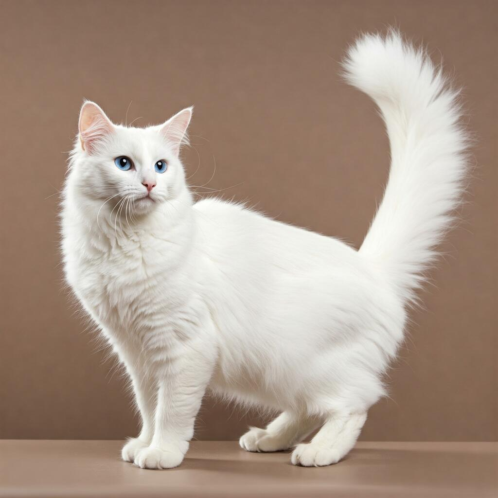
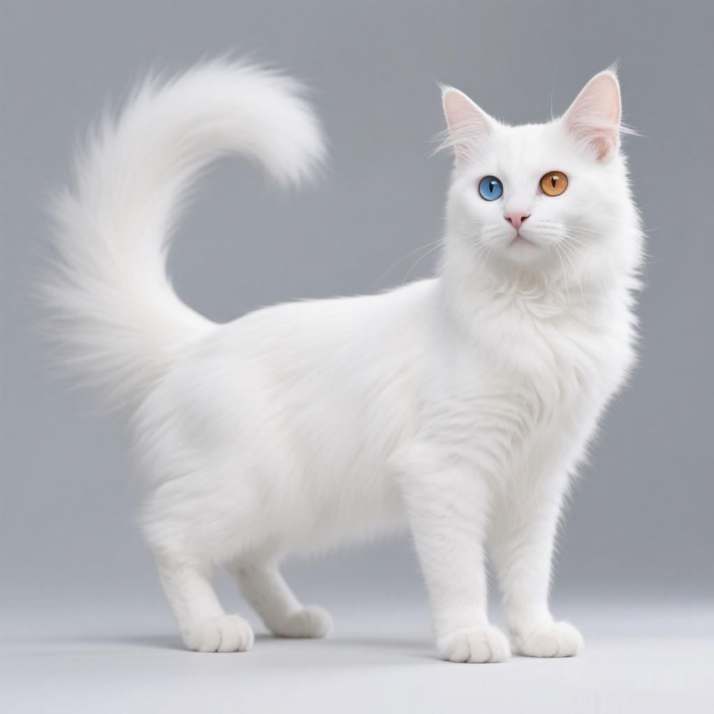
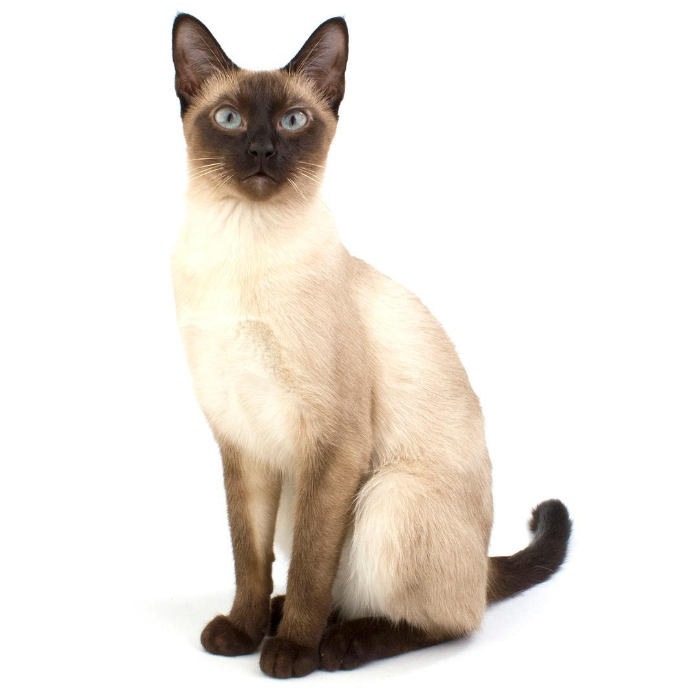
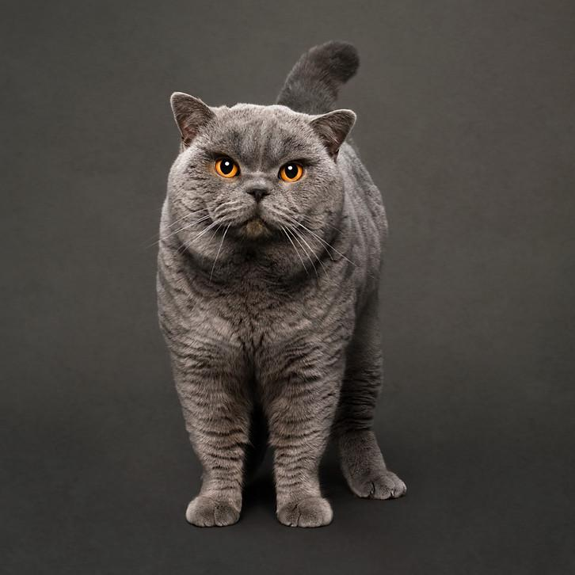

Dünyada farklı fiziksel özelliklere ve karakterlere sahip birçok kedi cinsi vardır. Van kedisi ve Ankara kedisi Türkiye’de tanınan kedi türlerindendir. Siyam kedileri ince vücutları ve belirgin renkleriyle, British Shorthair kedileri ise yuvarlak yüzleri ve sık tüyleriyle bilinir. Her kedinin karakteri kendi içinde farklılık gösterebilir.